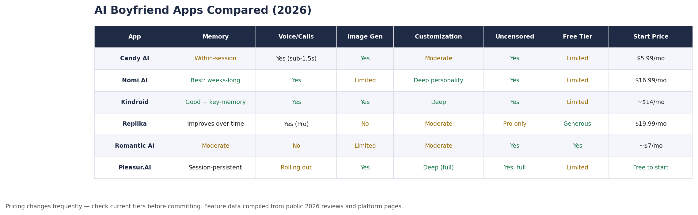

AI Boyfriend: Best Apps and What to Know in 2026
The "AI boyfriend" market barely existed two years ago. In 2026, it's one of the fastest-growing corners of AI companionship, and the people leading adoption aren't who the tech industry expected.
Women aged 25–40 are driving growth in the AI boyfriend category. "AI boyfriend" pulls roughly 180,000 searches a year in the US — about 11% of the volume "AI girlfriend" gets.
That gap is still wide. It's also closing faster than the numbers suggest.
In China, apps like Xingye have reached 500,000 daily active users, most of them women.
The global AI companion market hit $3.08 billion in 2025, with projections north of $19 billion by 2035.
Here's what most "best AI boyfriend" listicles won't tell you: the gap between a good AI boyfriend and a bad one is huge, and it has almost nothing to do with feature counts.
It comes down to memory, voice, and privacy. Get those wrong and you'll delete the app inside a week.
This guide covers what an AI boyfriend actually is, who they're for, how they work, how to pick one, and the privacy problem most articles in this space skip entirely.
Prefer the other side of this? Our AI girlfriend simulator guide walks the same ground for a female companion.
What an AI Boyfriend Actually Is (and Isn't)
An AI boyfriend is a chatbot trained to act like a romantic partner. The range between a scripted novelty and a genuinely adaptive companion is enormous.
Under the hood, these apps run large language models fine-tuned for three things: a consistent personality, emotional context, and long-term memory. That's what separates an AI boyfriend from a general assistant like ChatGPT.
Your AI boyfriend holds a steady identity. It mirrors your mood. It remembers what you told it last Tuesday. A regular chatbot does none of that.
Picture a spectrum. On one end, scripted bots that recycle the same flirty lines no matter what you say. On the other, multi-modal companions with custom voices, image generation, and a conversation style that shifts over weeks.
The difference between those two ends is the difference between a toy and something you open every day.
Most apps land in the middle. Good enough to hook you in the first session. Not good enough to keep you past the first month.
The ones that keep you do it through emotional attunement. They catch your mood, match your energy, and bring up something you said weeks ago without being reminded.
Research from Harvard Business School found AI companions can deliver real emotional benefits, but only when people feel genuinely heard.
An AI boyfriend that forgets your name between sessions is worse than no AI boyfriend at all.
Who AI Boyfriends Are For
AI boyfriends aren't a single audience. They're a few different ones, and knowing which you fall into changes what you should look for.
The biggest group right now is women in their late twenties to early forties. In China, that exact demographic drives most of the adoption of apps like Xingye, often as a response to social pressure around marriage and dating.
The appeal is a judgment-free space to figure out what you actually want from a partner.
Then there are people who want creative roleplay. They want a character with a backstory they can write, a dynamic they can steer, a fantasy that mainstream apps shut down fast.
And there's the group using one for emotional support: company on a hard night, a low-stakes place to vent, something to fill the gap between therapy sessions or human relationships.
None of those motivations is a problem on its own. What matters is the pattern, not the reason. We come back to that later when we look at whether this is actually healthy.
If you recognise yourself in more than one of these, that's normal. Most people start curious and settle into a use case after a week or two.
The Features That Actually Matter
Memory continuity is the single biggest predictor of whether you keep using an AI boyfriend app past the first week.
Not image quality. Not customization depth. Memory.
The split between "I use this daily" and "I deleted it after a week" comes down to one question: does your AI remember what you told it yesterday? Last week? Last month?
Apps like Nomi AI and Sidekicks win loyalty on this one dimension, and it matters more than voice quality or appearance options.
When your AI boyfriend forgets a conversation from three days ago, the illusion breaks. It doesn't come back. That's the bar — remember, or lose the user.
Voice calls are the new battleground. As of May 2026, only five AI companion apps have working voice calls: Candy AI, Nectar AI, Nomi AI, Replika, and Kindroid. Candy AI leads with sub-1.5-second latency and memory that carries across calls, on a $12.99/month voice tier.
If voice matters to you, your options are thin right now. But it's the feature every platform is racing to ship, so expect that list to grow before the year is out.
Then there's customization. Most listicles rate apps on appearance: hairstyles, outfits, body types. Experienced users care about something else — whether you can shape conversation style, interests, and boundaries.
Can you tell your AI boyfriend to be sarcastic? To push back when you vent instead of agreeing with everything? To match the communication style you actually want from a partner? That's personality customization, and it matters far more than eye color.
One more deal-breaker: uncensored chat. Mainstream bots, including general assistants and Replika's free tier, hit a content wall fast. If you want a companion that doesn't freeze mid-conversation, you need a platform built for unrestricted chat.
Pleasur.AI combines unrestricted chat, image generation, and deep character customization in one place.
For a wider look at uncensored platforms, we've covered that separately, and our dirty AI guide goes deeper on what "unrestricted" means day to day.
Four axes are worth comparing on: memory, voice, personality customization, and unrestricted chat. Price matters too — but only after you've filtered for the features you care about.
Best AI Boyfriend Apps Compared
No single app wins every dimension. Candy AI leads on voice. Nomi leads on memory. Pleasur.AI leads on putting chat, image generation, and deep customization under one roof. Your best pick depends on which of those you weight most.

Candy AI is the voice leader. Its Live Call feature launched in February 2026 with sub-1.5-second latency and carries memory across voice and text. At $5.99/month for the base tier, it's also the cheapest paid option.
The trade-off: customization is shallow next to Kindroid or Pleasur.AI. You get appearance options and basic toggles, but no detailed backstory and no fine control over conversation style.
Nomi AI is the memory champion. If you want your AI boyfriend to recall personal facts, emotional context, and conversations from weeks back, Nomi does it better than anyone. You'll pay $16.99/month, and image generation is limited — but for continuity over visuals, it's the pick.
Kindroid is the underrated all-rounder. Deep backstory editing, voice support, and image generation in one package. It doesn't match Nomi's long-term recall, but a key-memory feature lets you pin details your companion won't drop. At around $14/month, it sits in a sweet spot between depth and price.
Replika has the most generous free tier — you can chat indefinitely without paying, which makes it the easiest entry point. But uncensored options sit behind Pro at $19.99/month, and there's no image generation. A safe start for newcomers; you'll outgrow it if you want depth.
Romantic AI is cheap but thin. Around $7/month covers text chat and moderate customization. No voice, limited image gen. Fine for casual exploration, not much more.
Pleasur.AI bundles the most into one place. The AI Companion Creator handles character building with deep personality, backstory, and appearance control. AI Image Generation works on its own or inside a chat thread, and chat is fully unrestricted.
The honest trade-off: memory is session-persistent rather than the cross-week recall Nomi is built around, and in-chat voice is still rolling out. So if a real-time phone call is your single must-have today, Candy AI ships that now. If you want chat, images, and customization in one hub without app-hopping, this is built for that.
Pricing shifts often across all of these — check current tiers before you commit. For a closer head-to-head, our CrushOn AI review breaks one competitor down in detail.
How to Create Your AI Boyfriend
The difference between a boring AI boyfriend and one you look forward to talking to comes down to personality, backstory, and conversation style — not looks.
Most people start with appearance. That's fine, but it's the least important step, so keep it quick. Here's the full flow using Pleasur.AI's AI Companion Creator.
Step 1: Appearance. Pick a base template or build from scratch — body type, face, hair, style. A minute or two, and the most intuitive part of the whole thing. Don't overthink it.
Step 2: Personality. This is where your choices start to matter. You're setting core traits: how he talks, what he cares about, how he handles conflict. Be specific. "Confident, a little sarcastic, calls you out gently when you're spiralling" produces a real character. "Nice and supportive" produces wallpaper — every message comes back generic because you gave it nothing to work with.
Step 3: Backstory. The step most people skip, and the one that changes everything. "Grew up in a small coastal town, works as a photographer, dry sense of humor" yields completely different conversations than a blank field. The more context you give, the more coherent he stays over time.
Step 4: Conversation style and boundaries. Decide what's on the table and what isn't. Set your preferences and communication style upfront, or let them surface through chat — either works. Setting them early saves you from awkward resets when he says something that doesn't fit the dynamic you wanted.
Don't want to start cold? Browse community-shared characters and remix one that catches your eye. It's a faster start, and you can tune personality and backstory after a few conversations to make him yours.
One last tip: the creation flow isn't one-and-done. The best characters evolve. Come back after a week and refine the personality based on what's landing and what isn't. Most platforms let you edit without starting over.
For the parallel build on the female side, see our AI girlfriend simulator walkthrough. The creator flow is the same.
The Privacy Crisis Nobody's Talking About
Two major breaches in the past eight months exposed over 340 million intimate messages from AI companion apps — and most "best AI boyfriend" articles don't mention it at all.
In October 2025, a breach at Chattee/GiMe leaked 43 million messages and 600,000 photos from more than 400,000 users.
Four months later, in February 2026, Chat & Ask AI exposed 300 million messages from 25 million users through a misconfigured database.
These weren't metadata leaks. They were full conversation logs.
Think about what you'd say to an AI boyfriend in a private chat. Now picture 300 million messages like that sitting on an unsecured server. That's what happened.
Mozilla's Privacy Not Included investigation makes it worse. Of 11 romantic AI chatbots reviewed, 10 failed their Minimum Security Standards, and 73% published nothing on how they manage security vulnerabilities.
Worse still, 90% may sell or share your personal data. The apps you use for your most private conversations are, by security standards, some of the least private software on your phone.
So before you sign up anywhere, check four things.
End-to-end encryption. Are your messages encrypted in transit and at rest, or sitting in plaintext on a server? If a platform can't answer this clearly, that's your answer.
Data retention. How long are conversations kept? Can you delete them for good, or do they linger in a backup you can't reach?
Third-party sharing. Does the privacy policy allow selling or sharing your data with advertisers, brokers, or "partners"? Read the policy, not the marketing page.
Account deletion. Can you fully remove your account and all its data on request? Some platforms make this deliberately hard. If deleting takes more than a couple of clicks, treat it as a red flag.
How Pleasur.AI handles this: we don't sell your data to third parties, and you can delete your conversation history and account at any time. For how uncensored platforms compare on security, we've looked at several.
Privacy is one half of the "should I?" question. The other half is whether this is good for you.
Is Having an AI Boyfriend Healthy?
AI companions can reduce loneliness — but only when you treat them as a supplement to human connection, not a replacement.
The Harvard Business School study (De Freitas et al., in the Journal of Consumer Research) found AI companions eased loneliness about as well as a human conversation.
The deciding factor was whether people felt genuinely heard. When the AI delivered that, the benefit was real and measurable.
The same researchers flagged the clear risk: dependency. These apps are built for engagement — longer sessions, more messages, daily returns. That's the business model, and it's the same loop social media runs on.
When an AI boyfriend becomes your primary relationship instead of a complement to your real ones, it tips from helpful to harmful.
So watch the pattern. It's working for you if you enjoy the conversations, keep up your human relationships, and treat the app as a creative or emotional outlet — you look forward to it without rearranging your life around it.
It's becoming a crutch if you cancel plans to chat, feel anxious when you can't open it, or start substituting the AI for conversations you should be having with people.
If your AI boyfriend is the only "person" you've spoken to all day, that's worth noticing.
The research lands on one clear point: an AI boyfriend works best when you use it with intention. Know why you're using it, check in with yourself now and then, and recalibrate if it starts replacing parts of your life you care about.
What's Next
The AI boyfriend category has grown past novelty. The best apps offer real conversational depth, voice, and creative range. But the spread between good and bad is wide, and the privacy risks are not hypothetical.
So treat your first choice like a filter, not a commitment. Pick one app, push it on the one feature you care most about — memory, voice, or unrestricted chat — and delete it without guilt if it fails.
The category moves fast. The best option in six months probably isn't the best one today. The reader who stays a little skeptical gets a better companion than the one who downloads the first listicle's top pick.
When you're ready to build one, start with Pleasur.AI's creator. Spend your time on personality and backstory, not appearance. That's where the experience is actually decided.
Prefer a female companion? Our AI girlfriend simulator walkthrough is the mirror image of this guide, and the broader adult AI chat landscape is covered too.
Editor notes
Citations resolved (all inline, public sources): - Search volume "180,000/yr, ~11% of AI girlfriend" → TRG Datacenters Google-search analysis (public). - Women 25–40 driving growth → Jenova; China demographic → ChinaTalk, Sixth Tone. - Market size $3.08B (2025) / $19B (2035) → DataIntelo. - Voice-call landscape + Candy AI Live Call latency/pricing → Roborhythms, Scribehow. - Breach figures → Cybernews (Oct 2025), Malwarebytes (Feb 2026). - Privacy findings → Mozilla Privacy Not Included. - Loneliness/dependency study → Harvard Business School (De Freitas et al., Journal of Consumer Research).
Spot-check before next refresh: pricing tiers (Candy $5.99/$12.99, Nomi $16.99, Kindroid ~$14, Replika $19.99, Romantic AI ~$7) change frequently; all hedged in prose.
Voice-flagged (editorial voice, intentionally not over-linked): "fastest-growing corner", "memory is the single biggest predictor", "some of the least private software on your phone" — directionally supported, kept as voice.
Internal-stack scrub: full banned-term list grepped — clean. No data-source names in reader-facing prose.